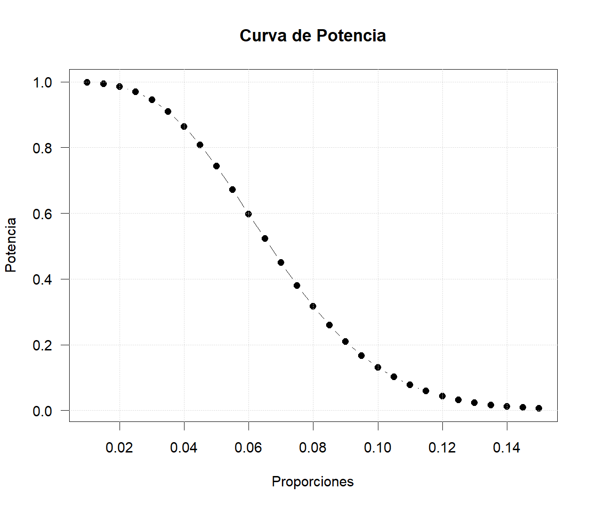
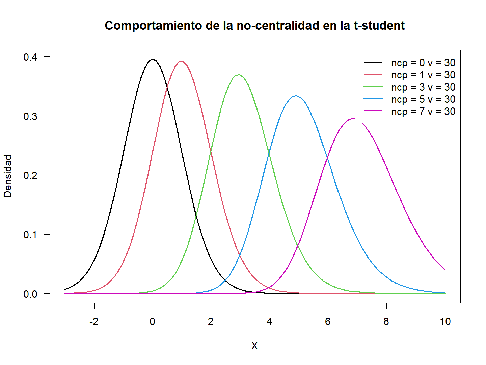

Potencia de las pruebas
Introducción
En la spruebas de hipótesis se parte de una afirmación para establecer la hipótesis nula, y esta debe considerarse como verdadera a menos que exista suficiente evidencia experimental en contra.
Al tomarse una decisión es necesario tener en cuenta las consecuencias que puede originarse como resultado del verdadero estado de la naturaleza: Rechazar \(H_0\) o equivocarse al rechazar \(H_0\).
| Decisión | \(H_0\) es Verdadera | \(H_a\) es Verdadera |
|---|---|---|
| Rechazar \(H_0\) | Error Tipo I | Decisión Correcta |
| Rechazar \(H_a\) | Decisión Correcta | Error Tipo II |
Si la decisión es rechazar \(H_o\), entonces puede que se rechace algo que es cierto (decisión incorrecta) o que se rechace algo que en realidad es falso (decisión correcta). si nno se puede rechazar \(H_0\), entonces no puede rechazarse algo que es cierto (decisión correcta), o no puede rechazarse algo que en realidad es falso (decisión incorrecta).
Cuando se toma una decisión con respecto a una hipótesis nula, entonces se puede incurrir en el error tipo I:
\[\text{Error Tipo I}=P(\text{rechazar }H_0\,|\,H_0\text{ es cierta})=\alpha\]
Equivocarse al rechazar \(H_0\) incurre a cometer un error tipo II:
\[\text{Error Tipo II}=P(\text{no poder rechazar }H_0\,|\,H_0\text{ es falsa})=\beta\]
Solo es posible cometer el error de tipo I cuando la decisión es rechazar la hipótesis nula, mientras que el error de tipo II solo es posible cuando la decisión es el no rechazar \(H_0\).
- Si la hipótesis nula es cierta, solo puede cometerse el error tipo I
- Si la hipótesis nula es falsa, solo puede cometerse el error tipo II
NO PUEDEN COMETERSE AMBOS ERRORES EN FORMA SIMULTÁNEA
| Decisión | \(H_0\) es Verdadera | \(H_a\) es Verdadera |
|---|---|---|
| Rechazar \(H_0\) | \(\alpha\) | \(1-\beta\) |
| Rechazar \(H_a\) | \(1-\alpha\) | \(\beta\) |
| \(100\%\) | \(100\%\) |
en muchas situaciones el error tipo I se considera coomo un error mucho más grave que el error tipo II. En la prueba de hipótesis estadísticas el enfoque general es aceptar la premisa que el error de tipo I es mucho más serio que el error de tipo II, y formular las hipótesis nula y alternativa de acuerdo con lo anterior.
No es posible fijar tanto \(\alpha\) como a \(\beta\) y diseñar alguna regla de decisión para probar \(H_0\) contra \(H_a\), dada una muestra aleatoria de tamaño \(n\).
Es por esta razón que se dice “equivocación al rechazar \(H_0\)” más que “aceptar \(H_0\)” cuando la evidencia muestral no apoya el rechazo de la hipótesis nula.
Potencia de la prueba
Dada una prueba de hipótesis, asumiendo que \(H_0\) es verdadera se calcula el tamaño de la Región Crítica o Valor-p de la prueba para compararla con el nivel de significancia o el error tipo I (\(\alpha\)).
Para calcular el error tipo II (\(\beta\)), se debe asumir que la hipótesis nula es falsa, esto quiere decir que se debe concentrar el análisis en los diferentes valores que puede tomar \(H_a\).
\[\begin{align*} H_0: \begin{cases} \theta &\leq\theta_0 \\ \theta &\geq \theta_0 \\ \theta &= \theta_0 \\ \end{cases} \quad \text{vs} \quad H_a: \theta=\theta_1 \end{align*}\]
Si la hipótesis nula es falsa entonces es posible calcular la probabilidad de no rechazar \(H_a\) cuando esta es falsa o el error tipo II para un valor de \(\theta_1\) dado.
\[\begin{align*} \beta= \begin{cases} &P(\theta \leq \hat\theta \quad|\quad \theta=\theta_1) \\ &P(\theta \geq \hat\theta \quad|\quad \theta=\theta_1) \\ &P(|\theta| \geq \hat\theta \quad|\quad \theta=\theta_1) \\ \end{cases} \end{align*}\]
De esta forma el tamaño del error de tipo II se obtiene como una función de los valores alternativos de \(\theta\) bajo \(H_a\).
Dado que \(\beta\) es la probabilidad de que un valor del estadístico de prueba no se ecuentre en la reguión crítica cuando \(H_0\) es falsa, entonces \(1-\beta\) representa la probabilidad de que un valor del estadístico de prueba se encuentre dentro de la región crítica cuando \(H_0\) es falsa.
La potencia de la prueba (\(1-\beta\)) representa la probabilidad de rechazar la hipótesis nula cuando ésta es falsa, es decir, cuando el valor del parámetro de \(H_a\) es cierto.
La potencia estadística depenede de un número de factores. En general, la potencia casi siempre depende del nivel de significancia (\(\alpha\) o error tipo I), del tamaño del efecto y del tamaño de muestra. La potencia aumenta cuando hay mayor tamaño de muestra, mayor tamaño del efecto y un nivel de significancia mayor.
Potencia para Proporciones
Bajo una prueba de hipótesis de dos colas se tiene.
\[H_0: p=p_0 \quad vs \quad H_a:p\neq p_1\]
Si se asume que \(H_o\) es falsa, entonces se puede calcular la potencia de la prueba. Para ello necesitamos definir el tamaño del efecto, es decir, la diferencia entre el \(\hat p\) de las muestras y el \(p_0\) de la hipótesis, el cuál se basa en la trasnformación arcseno.
\[\phi(p)=2\times\arcsin(\sqrt{p})\]
Entonces para una \(p_1\) dado el tamaño del efecto \(h\) está definido como:
\[\begin{align*} h &= \phi(\hat p) - \phi(p_0)\\ &= 2\times\arcsin(\sqrt{\hat p})-2\times\arcsin(\sqrt{p_1}) \end{align*}\]
La potencia de la prueba es calculada como:
\[\begin{align*} 1-\beta= \begin{cases} &\Phi(z_{\alpha/2}-h\sqrt{n})+1-\Phi(z_{1-\alpha/2}-h\sqrt{n})\quad \text{con } p=p_0 \\ &1-\Phi(z_{1-\alpha}-h\sqrt{n}) \quad \text{con } p < p_0 \\ &\Phi(z_{\alpha}-h\sqrt{n}) \quad \text{con } p > p_0 \\ \end{cases} \end{align*}\]
En R podemos calcular facilmente la potencia de las pruebas, incluso construir las curvas de potencia y las curvas características con diferentes valores de la hipótesis. Los paquetes pwr y WebPower son muy útiles para realizar los cálculos.
En una muestra de 85 recién nacidos, 10 presentaron riesgo de desnutrición. Las secretaría de salud sabe que si el porcentaje de recién nacidos en riesgo de desnutrición supera el 10% deberá generar una alerta al Ministerio de Saludo para hacer un plan de contingencia.
\[H_0:p=0.1\quad vs \quad H_a:p>0.1\] En esta prueba de hipótesis vimos que no se rechazaba la hipótesis nula, ahora la intención es analizar la probablidad de no rechazar \(H_0\) cuando esta es falsa, supongamos que el valor cuando se rechaza \(H_0\) ya no es el 10% sino el 5%, entonces. \[\beta=P(p\leq10/85\,|\,p=0.05)\] El tamaño del efecto está dado por: \[\begin{align*} h &= 2\times\arcsin(\sqrt{10/85})-2\times\arcsin(\sqrt{0.05})\\ &=0.2491847 \end{align*}\] Entonces la probabilidad de no rechazar \(H_0\) cuando esta es falsa es: \[\begin{align*} \beta=&\Phi(z_{0.95}-h\sqrt{n})\\ =& P(Z \leq (1.645-0.2492\sqrt{85}))\\ =&P(Z \leq -0.65252)\\ =&1-P(Z \leq 0.65252)\\ =&0.257034 \end{align*}\] Lo cualquiere decir que la apotencia de la prueba es \(1-\beta=0.742966\)
En R es fácil replicar ese ejemplo
# Para calcular el tamaño del efecto
h <- ES.h(p1 = 10/85,p2 = 0.05)
wp.prop(h = h,n1 = 85,alpha = 0.05,type = "1p",alternative = "great")## Power for one-sample proportion test
##
## h n alpha power
## 0.2491847 85 0.05 0.7429659
##
## URL: http://psychstat.org/prop# Curva de potencia
h <- ES.h(p1 = 10/85,p2 = seq(0.01,0.15,by=0.005))
p <- wp.prop(h = h,n1 = 85,alpha = 0.05,type = "1p",alternative = "great")
plot(seq(0.01,0.15,by=0.005),p$power,type="b",pch=19,las=1,
xlab="Proporciones",ylab="Potencia",
main="Curva de Potencia")
grid()
Ahora supongamos que tenemos una prueba de hipótesis de dos colas para la diferencia de dos proporciones.
\[H_0: p_1=p_2 \quad vs \quad H_a:p_1\neq p_2\]
Si se asume que \(H_o\) es falsa, entonces se puede calcular la potencia de la prueba. Para ello necesitamos definir el tamaño del efecto, es decir, la diferencia entre \(p_1\) y \(p_2\) de la hipótesis. Entonces el tamaño del efecto \(h\) está definido como:
\[\begin{align*} h &= \phi(p_1) - \phi(p_2)\\ &= 2\times\arcsin(\sqrt{p_1})-2\times\arcsin(\sqrt{p_2}) \end{align*}\]
La potencia de la prueba, cuando las muestras de ambas proporciones son iguales, es calculada como:
\[\begin{align*} 1-\beta= \begin{cases} &\Phi(z_{\alpha/2}-h\sqrt{n})+1-\Phi(z_{1-\alpha/2}-h\sqrt{n})\quad \text{con } p=p_0 \\ &1-\Phi(z_{1-\alpha}-h\sqrt{n}) \quad \text{con } p < p_0 \\ &\Phi(z_{\alpha}-h\sqrt{n}) \quad \text{con } p > p_0 \\ \end{cases} \end{align*}\]
En el caso que se tengan diferentes tamaños de muestra, entonces se debe estimar el tamaño de muestra armónico.
\[\tilde n=\frac{n_1n_2}{n_1+n_2}\]
Así, la potencia de la prueba es calculada como:
\[\begin{align*} 1-\beta= \begin{cases} &\Phi(z_{\alpha/2}-h\sqrt{\tilde n})+1-\Phi(z_{1-\alpha/2}-h\sqrt{\tilde n})\quad \text{con } p=p_0 \\ &1-\Phi(z_{1-\alpha}-h\sqrt{\tilde n}) \quad \text{con } p < p_0 \\ &\Phi(z_{\alpha}-h\sqrt{\tilde n}) \quad \text{con } p > p_0 \\ \end{cases} \end{align*}\]
Una maestra quisiera saber si su clase de honores ha aprendido el material significativamente mejor que otra de sus clases. Ella ha diseñado una prueba y le gustaría comparar cuántos pasan en una clase en comparación con la otra. Ella estima que aproximadamente el 90% aprobará en la clase de honores, y que el 70% aprobará en la otra clase. Lamentablemente, el tamaño de las clases no es igual. Ella tiene 35 estudiantes en la clase de honores y 50 estudiantes en la otra clase. ¿Tendrá ella suficiente poder para su estudio?
\[H_0:p_1=p_2\quad vs \quad H_a:p_1>p_2\] El objetivo es saber si con los tamaños muestrales y un nivel de significancia dado, este estudio vale la pena hacerlo bajo las hipótesis planteadas, entonces hay que calcular la potencia de la prueba para este caso. El tamaño del efecto está dado por: \[\begin{align*} h &= 2\times\arcsin(\sqrt{0.9})-2\times\arcsin(\sqrt{0.7})\\ &=0.515778 \end{align*}\] Como se tienen diferentes tamaños de muestra, entonces hay que calcular el tamao de muestra armonizado. \[\tilde n=\frac{n_1n_2}{n_1+n_2}=\frac{35\times50}{35+50}=20.58824\] Entonces la probabilidad de no rechazar \(H_0\) cuando esta es falsa con un \(\alpha=0.05\) es: \[\begin{align*} \beta=&\Phi(z_{0.95}-h\sqrt{\tilde n})\\ =& P(Z \leq (1.645-0.5158\sqrt{20.58824}))\\ =&P(Z \leq -0.695453)\\ =&1-P(Z \leq 0.695452)\\ =&0.243386 \end{align*}\] Lo cualquiere decir que la apotencia de la prueba es \(1-\beta=0.756614\)
En R es fácil replicar ese ejemplo
# Para calcular el tamaño del efecto
h <- ES.h(p1 = 0.9,p2 = 0.7)
wp.prop(h = h,n1 = 35,n2=50,alpha = 0.05,type = "2p2n",alternative = "great")## Power for two-sample proportion (unequal n)
##
## h n1 n2 alpha power
## 0.5157784 35 50 0.05 0.7566141
##
## NOTE: Sample size for each group
## URL: http://psychstat.org/prop2p2nPotencia para medias
Para establecer la potencia de la prueba de hipótesis para una media, asumimos que la muestra aleatoria distribuye normal, esto quiere decir que el estadístico de prueba se basa en la distribución t-student. Bajo una prueba de hipótesis de dos colas se tiene.
\[H_0:\mu=\mu_0 \quad vs \quad H_a: \mu\neq\mu_1\]
Si se asume que \(H_0\) es falsa, entonces se puede calcular la potencia de la prueba. Para ello necesitamos definir el tamaño del efecto, es decir, la diferencia entre \(\bar{X}\) de las muestras y el \(\mu_1\) de la hipótesis.
\[d=\frac{\bar{x}-\mu_1}{s_x}\]
A partir de los intervalos de confianza se tiene
\[\bar{X}_U=\mu_0+t_{(\alpha,n-1)}\frac{S}{\sqrt{n}}\] y
\[\bar{X}_L=\mu_0-t_{(\alpha,n-1)}\frac{S}{\sqrt{n}}\]
Entonces para un \(\mu_1\) dado, se calcula el estadístico de prueba:
\[T_c=\frac{\bar{X}_{(L|U)}-\mu_1}{\frac{S}{\sqrt{n}}}\]
Dado esto, la potencia de la prueba se calcula como:
\[\begin{align*} 1-\beta= \begin{cases} &P(|T| \geq T_c)\quad \text{con } \mu=\mu_1 \\ &P(T \geq T_c) \quad \text{con } \mu < \mu_1 \\ &P(T \leq T_c) \quad \text{con } \mu > \mu_1 \\ \end{cases} \end{align*}\]
Utilizando el tamaño del efecto \(d\) el cálculo de la potencia de la prueba requiere de establecer el parámetro de no-centralidad para a distribución t-student.
- Para una cola: \(ncp=d\times\sqrt{n}\)
- Para dos colas: \(ncp=d\times\sqrt{n/2}\)
Este parámetro significa que la distribución t-student no se centra en \(\mu=0\) si no en otro valor.

Entonces para calcular la potencia se requiere, con un \(\alpha\) dado extraer el valor del cuantil de la distribución \(t_{(\alpha,n-1)}\), y con este valor se calcula la probabilidad para una t-student con parámetro de no-centralidad, así la potencia de la prueba se puede calcular como:
\[\begin{align*} 1-\beta= \begin{cases} &P(|T_{ncp}| \geq t_{(\alpha/2,n-1)})\quad \text{con } \mu=\mu_1 \\ &P(T_{ncp} \leq t_{(\alpha,n-1)}) \quad \text{con } \mu < \mu_1 \\ &P(T_{ncp} \geq t_{(1-\alpha,n-1)}) \quad \text{con } \mu > \mu_1 \\ \end{cases} \end{align*}\]
De acuerdo con estudios sobre la fuerza prensil manual en adultos mayores que la fuerza de prensión se distribuye normalmente.Se toma una muestra aleatoria de 16 adultos mayores y se obtiene un fuerza de prensión promedio para la mano débil de 15.63 kgf con una desviación estándar de 2.18 kgf. Con un nivel de siginificancia del 3%, se quiere establecer la potencia de una prueba de hipótesis con los datos obtenidos asumiendo que la prensil es menor a 16.7 kgf
De los datos se tiene que el tamaño del efecto es de la forma: \[d=\frac{15.63 - 16.7}{2.18}=-0.19083\] El parámetro de no centralidad está dado por: \[ncp=d\times\sqrt{16}=-1.963303\] Con un \(\alpha=0.03\) se tiene que \(t_{(0.03,15)}=-2.034289\). Entonces la potencia de la prueba es: \[P(T_{ncp} \leq -2.0343 \,|\, ncp=-1.963303)=0.486528\] Este valor es fácil calcularlo enRcon la funciónpt().
## [1] 0.486528En R es fácil replicar ese ejemplo
# Tamaño del efecto
d <- (15.63-16.7)/2.18
wp.t(n1 = 16,d = d,alpha = 0.03,type = "one",alternative = "less")## One-sample t-test
##
## n d alpha power
## 16 -0.4908257 0.03 0.4865277
##
## URL: http://psychstat.org/ttest# Curva de potencia
d <- (15.63-seq(14,18,by=0.1))/2.18
p <- wp.t(n1 = 16,d = d,alpha = 0.03,type = "one",alternative = "less")
par(mar=c(3,3,7,2))
plot(d,p$power,type="b",pch=19,las=1,
xlab="Tamaño del Efecto",ylab="Potencia",
main="Curva de Potencia")
axis(3,at = seq(-1,1,by=0.25),labels = 15.63-seq(-1,1,by=0.25)*2.18)
grid()
Ahora supongamos que tenemos una prueba de hipótesis de dos colas para la diferencia de dos medias.
\[H_0:\mu_1=\mu_2 \quad vs \quad H_a:\mu_1\neq \mu_2\] El tamaño del efecto está dado por:
\[d=\frac{\bar{x}-\bar{y}}{S_p}\]
con,
\[S_p=\sqrt{\frac{(n_x-1)S^2_x+(n_2-1)S_y^2}{n_x+n_y-2}}\]
Y el parámetro de no centralidad está dado por:
\[ncp=d\times\sqrt{\frac{n_xn_y}{n_x+n_y}}\]
Entonces para calcular la potencia se requiere, con un \(\alpha\) dado extraer el valor del cuantil de la distribución \(t_{(\alpha,n-1)}\), y con este valor se calcula la probabilidad para una t-student con parámetro de no-centralidad, así la potencia de la prueba se puede calcular como:
\[\begin{align*} 1-\beta= \begin{cases} &P(|T_{ncp}| \geq t_{(\alpha/2,n-1)})\quad \text{con } \mu=\mu_1 \\ &P(T_{ncp} \leq t_{(\alpha,n-1)}) \quad \text{con } \mu < \mu_1 \\ &P(T_{ncp} \geq t_{(1-\alpha,n-1)}) \quad \text{con } \mu > \mu_1 \\ \end{cases} \end{align*}\]
Un médico desea evaluar si existe diferencias entre dos grupos que realizan ejercicios cardiovasculares, hasta ahora ha realizado 6 muestra para el primer grupo con un tiempo promedio de 17.333 min y una varianza de 9.467, y para el segundo grupo ha realizado 9 pruebas con un promedio de tiempo de 18.556 min y una varianza de 13.278. Con esta información y un nivel de significancia del 5% ¿la potencia de la prueba es suficientemente grande para comparar los grupos?.
De los datos se tiene que el tamaño del efecto es de la forma: \[d=\frac{|17.333-18.556|}{S_p}=d=\frac{1.223}{\sqrt{\frac{(6-1)9.467+(9-1)13.278}{6+9-2}}}=0.3558447\] El parámetro de no centralidad está dado por: \[ncp=d \times \sqrt{\frac{6\times9}{15}}=0.6751678\] Con un \(\alpha=0.05\) se tiene que \(t(0.975,13)=2.16037\). Entonces la potencia de la prueba es: \[P(|T_{ncp}|\geq |2.16037|\,|\,ncp=0.6751678)=0.09604945\] Este valor es fácil calcularlo enRcon la funciónpt().
## [1] 0.09604925En R es fácil replicar ese ejemplo
d <- abs(((17.333-18.556)/sqrt((5*9.467+8*13.278)/(6+9-2)))*sqrt(6*9/15))
wp.t(n1 = 6,n2 = 9,d = 0.3558447,alpha = 0.05,
type = "two.sample.2n",alternative = "two")## Unbalanced two-sample t-test
##
## n1 n2 d alpha power
## 6 9 0.3558447 0.05 0.09604945
##
## NOTE: n1 and n2 are number in *each* group
## URL: http://psychstat.org/ttest2n